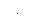
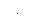

Manual Triggering
In the manual trigger mode (front panel only), you can manually trigger the function generator by pressing the front-panel key. The function generator initiates one sweep or outputs one burst for each time you press the key. Thekey is illuminated while the function generator is waiting for a manual trigger (the key is disabled when in remote).
key. The function generator initiates one sweep or outputs one burst for each time you press the key. Thekey is illuminated while the function generator is waiting for a manual trigger (the key is disabled when in remote).